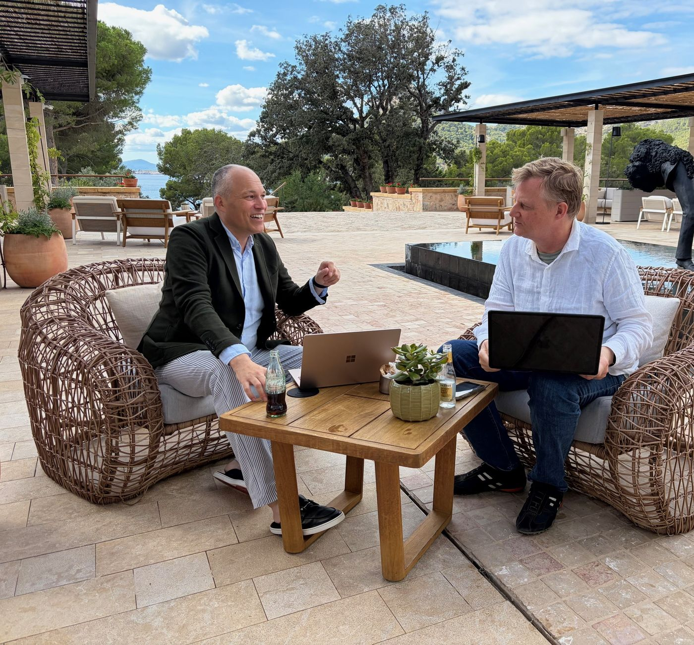
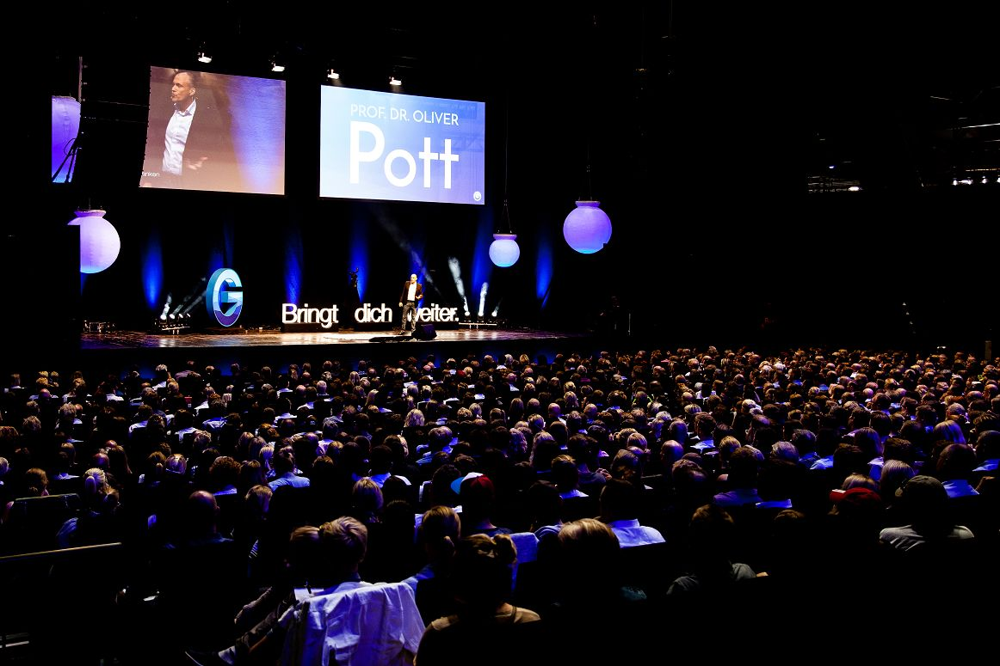
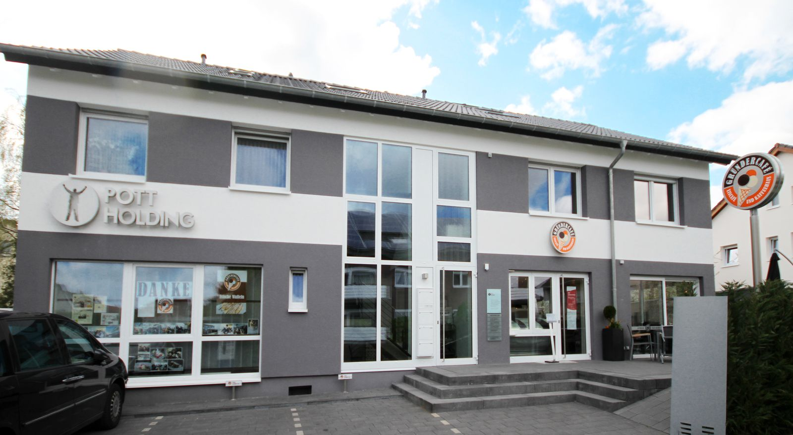

Coaching · Vortrag · Lesung
Dr. Oliver Pott als Business-Coach oder für einen Vortrag buchen
Forbes schreibt: „Einer der erfolgreichsten Internet-Unternehmer im deutschsprachigen Raum“


Biografie
Mehr über Dr. Oliver Pott

Prof. Dr. Oliver Pott, Jahrgang 1973, ist selbst Digital-Gründer: Gleich 3 seiner Gründungen wurden zu Multi-Millionen-€-Projekten.
Seine Firma Blitzbox war 2003 eine der ersten Software-Download-Plattformen Deutschlands. Schon nach 2 Jahren hatte Blitzbox über 4 Millionen € Umsatz erzielt – und wurde für mehrere Millionen € vom französischen börsennotierten Avanquest-Konzern gekauft. Für einige Jahre arbeitete Oliver vor allem aus Paris, New York, München – und Paderborn.
Du lernst vom Founder selbst – denn Oliver Pott ist aus dem Nichts heraus gestartet. Sein Motto: „Wenn du lernen willst, wie man Brot backt, gehe zum Bäcker!“ Auf seiner Website founder.de zeigt er seit 2005, wie sich nur mit einer guten Idee ein Web-Business aufbauen lässt. Über 500.000 Kunden und Leserinnen hat Dr. Pott bislang erreicht.
Das renommierte „Founders Magazin“ hat ihn in die Top-30-Liste der besten deutschen Digital-Entrepreneure (Kategorie: Marketing) aufgenommen. „Einer der erfolgreichsten Internet-Unternehmer im deutschsprachigen Raum“, meint auch das weltweit wohl renommierteste Wirtschaftsmagazin Forbes.
Und sonst? Dr. Oliver Pott lehrt seit 2010 als Professor in Paderborn Entrepreneurship und Internet-Marketing.
Seine Bücher sind regelmäßig auf den deutschsprachigen Bestseller-Listen zu finden und erreichten Top-10-Platzierungen in den Bestseller-Listen von SPIEGEL, Handelsblatt, Manager-Magazin, BILD, Amazon und Thalia. Oliver Potts Werke sind in Englisch, Spanisch, Französisch, Italienisch, Niederländisch, Russisch und Koreanisch erschienen.
Auch international berichten zahlreiche US-Magazine über Oliver Potts Erfolge. Einen Überblick über nationale und internationale Presseberichte über Dr. Oliver Pott findest du hier.
Du kannst Dr. Oliver Pott als Coach für dein Business buchen. Oder als Redner für deine Veranstaltung. Mehr dazu unten auf dieser Seite.
Privatcoaching
Dein individueller Privatcoaching-Tag mit Dr. Oliver Pott und ARD-Legende Jörg Schieb
Auf 400 qm und mit eigenem EisCafe hat Dr. Oliver Pott schon 2010 ein Zentrum für Gründer in Paderborn geschaffen – dort findet dein Privatcoaching-Tag statt. Oder alternativ auf Mallorca im Four Seasons. Dort entstand auch das Bild.
Jörg Schieb ist ARD-Experte für KI im Business und berichtet in seiner eigenen Sendung „Angeklickt!“, für die Tagesschau und das ZDF.
Der Privatcoaching-Tag ist perfekt für dich, wenn …
- du bereits eine Geschäftsidee hast, aber nicht weißt, wie genau du sie umsetzen solltest
- du schon ein bestehendes Geschäftsprojekt hast, das aber vor sich hindümpelt und einen „Kickstart“ braucht
- du bereits ein erfolgreiches Projekt hast, das du jedoch auf eine völlig andere, neue Umsatzebene heben willst
3 klare Schritte zum Erfolg mit deinem Internet-Projekt
Vorbereitungsgespräch
Der erste Schritt ist ein 30-minütiges, umfassendes Vorbereitungsgespräch per Telefon zwischen Dr. Pott und dir, in dem wir die genauen Eckpunkte und klaren Ziele für den Coaching-Tag abstimmen.
Dein Coaching-Tag
Der nächste Schritt ist ein sehr gut von uns vorbereiteter Coaching-Tag (Termin nach gegenseitiger Absprache) mit dir in unserem Gründerzentrum in Paderborn, alternativ im Four Seasons auf Mallorca. Bring gern auch Begleitpersonen mit!
Während des Tages erarbeiten wir persönlich mit dir eine exakte Business-Strategie für dein Online-Projekt. Oliver zeigt dir die exakte Umsetzung dieser Strategie in die Praxis sowie die dazu notwendigen Systeme und Instrumente. Am Coaching nehmen teil: Jörg Schieb (ARD-Digitalexperte und KI-Profi). Wir denken dein Projekt gemeinsam von A bis Z durch – und zwar als großes Projekt!
Follow-up
Einige Wochen später folgen mehrere 60-minütige Follow-up-Gespräche per Zoom, in denen weitere offene Fragen geklärt werden.
Stimmen
Stimmen über Dr. Oliver Pott
Sven Platte
Sven Platte, Founder und CEO Digistore24. Der gelernte Zahnarzt setzt heute über 400 Millionen € pro Jahr mit seiner Bezahlplattform um.
Bodo Schäfer
Bodo Schäfer, Coach und Unternehmer mit über 60 Mitarbeitern in Bergisch Gladbach
Andrea Griessmann
Andrea Griessmann, ARD-Moderatorin „Planet Wissen“. Andrea ist auch als Systemischer Coach aktiv und hat daraus ein Business aufgebaut
Jörg Schieb
Jörg Schieb, Digitalexperte der „Tagesschau“ und langjähriger Moderator „ARD Ratgeber Internet“
Hermann Scherer
Hermann Scherer organisiert die New York Tour mit dem Schauspieler Lee Straußberg
Oliver Geisselhart
Oliver Geisselhart ist Deutschlands führender Gedächtniscoach – sogar mit eigener Show im ZDF
Meike Hohenwarter
Business-Coach. Bringt Menschen und vor allem Frauen mit ihren Projekten zur digitalen Sichtbarkeit
Dirk-Michael Lambert
Business-Coach für Unternehmer und speziell den Mittelstand. Einer der ersten, die Internet-Marketing in Deutschland verankert hat.
Karo und Claudio Trento
Schmerztherapeuten, die ihr Wissen digitalisiert und sich heute ein Multi-Millionen-EUR-Business im Internet aufgebaut haben
Ralf Schmitz
Führender deutscher Internet-Marketing-Experte mit beeindruckender Karriere: Vom einfachen Dreher zum Internet-Profi
Paul Misar
Immobilieninvestor mit eigenem zweistelligem Millionenportfolio
Mario Wolosz
Gründer und CEO von Klicktipp, Europas führender E-Mail-Versand-Software
Im Fernsehen
Sogar der SWR hat über Dr. Oliver Potts Privatcoaching und eines der Projekte berichtet.
Hier findest du den Original-Beitrag.
Speaker
Dr. Oliver Pott als Speaker für einen Vortrag oder eine Buchlesung buchen
- Themen: Digitalisierung, Startup-Kultur, Leadership
- Individuelle Themen nach Absprache
- Kann als „SPIEGEL Bestseller-Autor“ beworben werden inkl. Signierstunde im Anschluss an den Vortrag


Das Privatcoaching von Dr. Oliver Pott kann ich jedem empfehlen, der endlich im Internet durchstarten will. Es ist zielgerichtet und von großem praktischen Nutzen.
Ich habe extrem viel gelernt und Oliver Pott hat dafür gesorgt, dass das Wissen auch in die Praxis umgesetzt wird. Während des Coachings habe ich u.a. meine Website inkl. Blog erstellt und ein verkaufsstarkes, digitales Produkt entwickelt. Wer eine „Abkürzung“ für seinen Erfolg im Internet sucht, für den ist das Privatcoaching von Dr. Pott goldrichtig.
Thomas Friebe – Stimmtrainer und Deutschlands bekannteste TV-Stimme („ARD Presseclub“, „Wer wird Millionär“)
Preise und Anfragen
Preise und Anfragen
Bei Interesse an einem Privatcoaching-Tag, einem Speaker-Engagement oder an einer Buchlesung rufe gern Dr. Oliver Potts persönliche Assistentin Stefanie Sommerfeld (im Bild) unter 05251-688959-3 an oder schreib eine E-Mail an sommerfeld@pott-holding.de.
Der Preis für einen Privatcoaching-Tag mit Prof. Dr. Oliver Pott und Jörg Schieb beträgt 9.800,00 € zzgl. MwSt.
Lesungs- und Speaker-Tarife richten sich nach Teilnehmerzahl, Thema und Anreise und können individuell vereinbart werden. Kontaktiere Stefanie Sommerfeld oder Dr. Potts Redneragentur „Speaker's Excellence“ (Stuttgart).